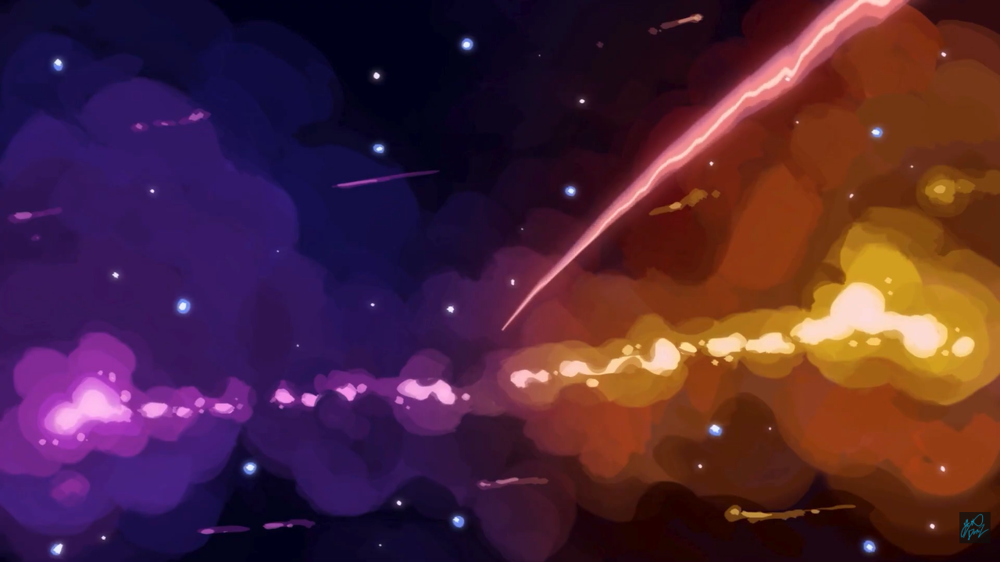
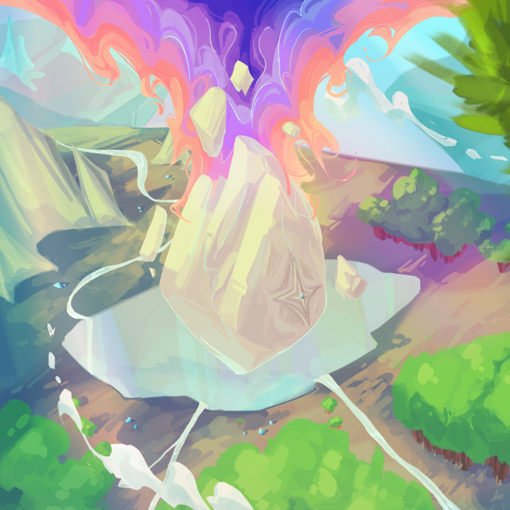
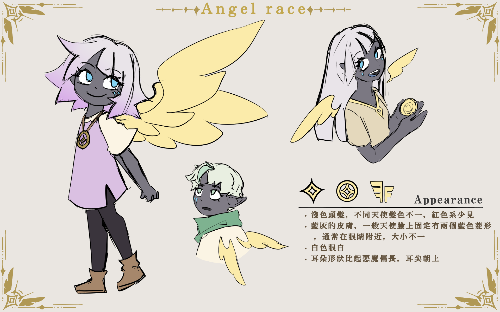
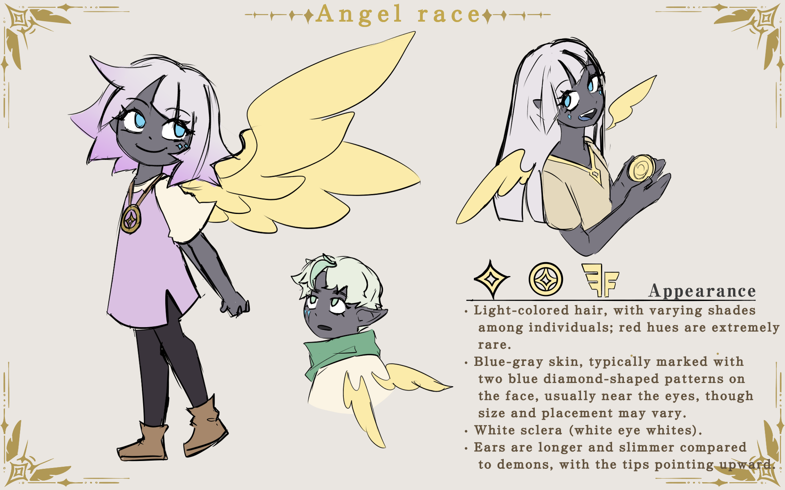
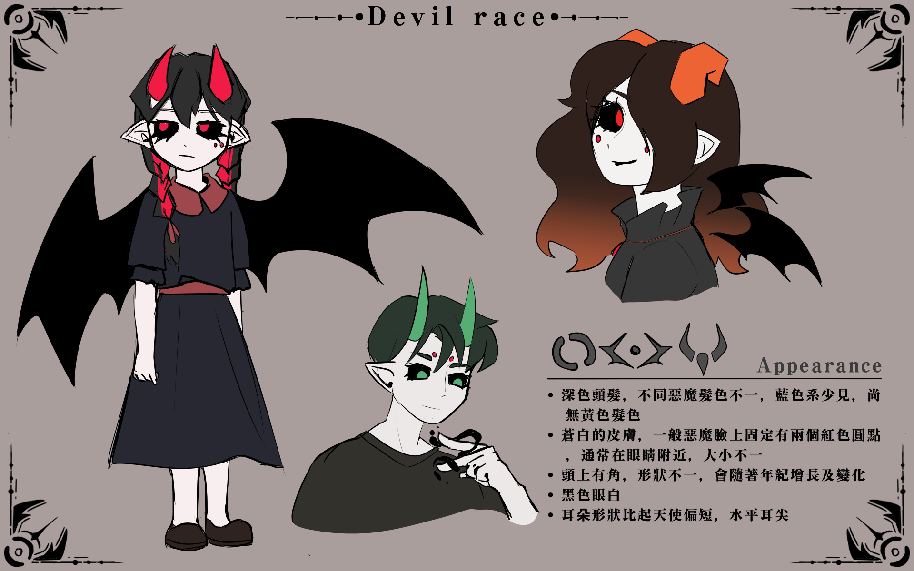

根源能量是世界誕生之初產生的能量。根源能量分為光與塵兩種。光的能量使世界穩定，有秩序的運行。塵的能量帶來變化，創造出無數的差異性，讓世界更多樣化。
宇宙誕生之初，無數懸浮物質在虛空撞擊、旋轉。在漫長的旋轉中，一個環狀的地塊撞擊旋轉過程中逐漸形成。環形地塊不斷旋轉，吸引著周圍的物質，這些物質有些落入地表，成為陸地的一部分，有一些懸浮於空中，形成早期的大氣。在這片環形大地的中央，根源能量與其他物質一同被擠壓、沉澱，形成了核心。核心噴發的光與塵碎片成為了最初的天使與惡魔。但在天使與惡魔長年的能量爭奪後，枯竭的核心讓地貌發生了永久性的改變。如今的世界被巨大的虛空裂隙一分為二，北方土地因地層斷裂而破碎，南方地殼則大幅下沉，並長年被灰霧壟罩。

在地塊成形之初，根源能量與其他物質被吸向地塊中央。不斷的碰撞擠壓讓地塊中央出現了一個菱狀核心。核心中，光與塵結合的地方形成了能量礦。核心越堆越大，固化前噴出的光與塵碎片落到土地上，形成了初代的天使與惡魔。
撒拉弗: 世界成形之初，由最穩定的能量，凝結而成的完整生命形態。撒拉弗擁有六片翅膀，能同時運用光與塵能量。壽命較長，並且有強大的法力。至今世界只有Seraphina和Luxsariel兩位撒拉弗。
由光能碎片凝聚而生。能使用光的魔法。擁有灰色的皮膚、白、金、藍等淺色調的髮色。天使族在性格上普遍偏向守序、保守，重視制度與秩序。他們擅長運用光能進行照明與治療。於天使族而言，維持世界的穩定性比追求變化更為重要，這樣的價值觀影響了他們的文化與生活方式。


由塵能碎片凝聚而生。能使用塵的魔法。擁有白色的皮膚、黑、紫、紅等深色調的髮色，並且天生有角。惡魔族的性格普遍不受拘束，傾向追求自由、創造與突破。他們擅長運用塵來進行創造與加工，喜歡有彈性且多樣的生活方式，對規範束縛感到牴觸。

在這片還未完全成形的環狀土地上，光和塵的能量在核心形成的過程中不斷碰撞、沉積，產生了大量碎裂的光與塵顆粒。其中有兩股最穩定、也最接近完整生命形態的能量，在核心外圍逐漸聚集，最終凝結成兩個擁有六翼的生命——Seraphina與Luxsariel。他們在同一個時間形成，如同雙胞胎一般，自誕生後便一直一起探索自己的能力與這片正在成型的世界。Seraphina性格穩重，比較冷靜，也較能保持情緒的平衡。Luxsariel的情緒波動相對明顯，喜歡嘗試新事物，也常常提出一些創新的想法。兩人雖然同時擁有光與塵的能量，但Seraphina更常使用光，而Luxsariel更常使用塵。即便兩人有不同的喜好與行事方式，他們的互補讓關係更加密切。隨著核心逐漸穩定，光與塵的沉積物與能量礦開始產生更明顯的分層現象。在這段時間裡，核心有時會在擠壓與震盪過程中釋放出小片的光或塵，這些碎片落到地表後便逐漸成形，最終化成人形，成為最初的天使和惡魔。這些第一代生命在地面上建立簡單的聚落，而Seraphina和Luxsariel也開始引導他們學習光與塵的力量。兩位撒拉弗在世界形成的最初階段，基本上肩負著指引者的角色。他們教導天使如何運用光進行照明與治療，也協助惡魔理解塵的變化特性與創造能力。隨著居住聚落逐漸擴大，這片土地開始呈現出更明確的生活軌跡。